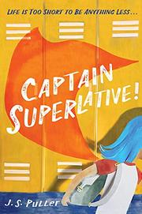
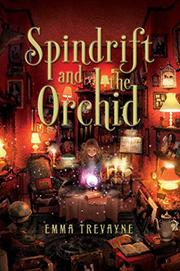
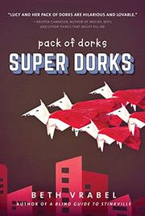
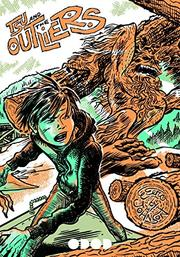
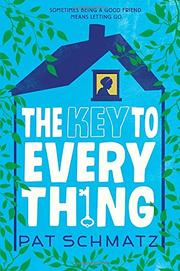
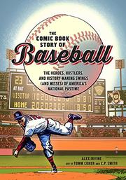

Book Reviews
As the XY follow-up to her XX exposé into what makes a preteen body tick, neuroscientist and actress Bialik (Girling Up, 2017, etc.) lends her scientific and maternal expertise to anyone fumbling through the boy-to–young man process. Replacing mystery and misunderstanding with science (proteins, chemicals, and hormones, oh my) the book scrutinizes the human body’s pubescent evolution. This is a pragmatic and relatable tool for understanding how, why, and what you’re chemically wired for, from hair growth to attention span, and it’s careful to note that generalizations are guides not rules. In other words, there’s no “right” time for the P word to kick in. What’s happening to girls (breasts, ovaries, height) on the puberty periphery is also discussed, as is gender identity. (Of note: a global map of countries recognizing more than two genders.) Merging research with experience raising two young boys, the result avoids a myopic point of view by peppering pages with lighthearted line drawings and sidebars with firsthand accounts from anonymous men. Bialik assures readers that we all figure out this hormonal playground called our body: In other words, when it comes to puberty, you’ve got this. Knowing where to sit at lunch when you get to high school? That’s another book entirely.
Seventh-grader Jane Silverman becomes a sidekick to the girl in her middle school who has taken on a fearless superhero persona. Narrator Janey, who’s white, and her classmates are witness to the constant bullying that alpha girl Dagmar, also white, inflicts on their classmate Paige, who is African-American (“For as long as I can remember,” Paige tells Janey, “Dagmar’s been awful to me”). Dagmar’s star status at the school keeps her from being recognized as the bully she is until Capt. Superlative appears in the hallways, performing generous acts of kindness, courage, and recognition. Janey, who has been flying under the radar since her mother’s death from cancer a few years earlier, discovers through some sleuthing that the girl in the homemade superhero costume is a classmate, Chinese-born Caitlyn Li. The two girls team up to offer study guides and mints, door opening and other small courtesies, and general encouragement to the student body. Revelations abound, including the reasons behind Caitlyn’s act, which hit Janey hard, and behind Dagmar’s bullying of Paige. Ultimately Caitlyn, Janey, and Paige heroically disrupt Dagmar’s reign of terror and create a legacy for Capt. Superlative. This fairly believable middle school drama is punctuated with poignancy and humor—but the castin
An orphan comes into a fabulous inheritance only to discover that it not only needs defending, but is more a curse than a blessing. Raised by her enigmatic grandfather, who sells such magical curiosities as strap-on wings, 15-year-old Spindrift knows only that her parents died at sea until a strange customer’s inquiry touches off a chain of astonishing revelations. It seems that the Seven Sages who created the world distilled their essences in the forms of orchids into seven colored crystal balls long ago, and one of them, a black one that can grant certain limited kinds of wishes, has come down in Spindrift’s family. Moreover, after her grandfather reluctantly shares a trove of letters, she learns that her parents had set out to gather the rest but had been betrayed and killed by none other than Roland, the man who had come to the shop. Knowing that Roland already has five of the crystals—and also that they cause far more harm than good—Spindrift sets out both to recover the long-hidden sixth and exact revenge. Trevayne tucks in oblique clues, motif-building references, a neatly disposed-of bully, dark-skinned twins as allies for Spindrift (everyone else in the cast presents as white), a single encounter with an eerie street person, and other elements as if she were checking them off a list.
The pack of dorks, a group of unpopular fifth-graders who have banded together, are back for a third outing. Lucy, fighting against impending puberty, sees her small group of friends changing. April has restyled her frizzy hair and enrolled in a magnet school where she can leave her unfortunate reputation behind. Sam, while saving toddler twins from getting hit by a car, is badly injured. He’s a hero—a status narrator Lucy deeply envies—but his promising gymnastics career is over, and he’s filled with anger that too often is turned on Lucy. Amanda admits that she’s never known her mother, a traveling fortuneteller in a Renaissance fair, but Lucy finds a way to share her own. Sheldon is on a mission, rejected by many of his classmates, to save the rare turtles that are hatching in the playground mulch. Guided by an outstanding teacher, Lucy decides to run for class president, mostly just to make her own discerning point of view heard, despite relentless, realistic harassment from popular boy Tom, also a candidate. Lucy’s heartfelt voice, as she develops a growing understanding—and acceptance—of herself and her friends, is believable and moving, returning to the wisdom and deep emotional resonance that elevated to excellence the first of this series. The book adheres to the white default.
A nonverbal boy and his sasquatch buddy are pursued by a sinister organization in Johnson’s (co-author: Original Fake, 2016, etc.) solo graphic novel debut. Tsu, a boy who rides the “short bus” to school, may not speak but still communicates effectively with expressions and gestures. When his disability (never specified in the text) makes him a target for bullies in his rural town, he escapes to the woods and the company of a reclusive creature, marvelously depicted as being as gnarled and massive as the ancient trees he dwells among. Tsu’s own hidden powers attract the attention of an unscrupulous chimpanzeelike scientist and his sinuous, venomous chupacabralike sidekick who hunt “outliers” for mysterious purposes. The oddball premise is well-matched to the scratchy, ink-heavy art accented by monochrome color washes, reminiscent of 1950s horror comics. Unfortunately, important details of the narrative are muddled and inconsistent, the reasons for Tsu’s final choices are unclear, and the unspecified cause of his muteness makes the eventual cure potentially troubling. Nonetheless, Tsu’s loneliness and isolation, and the sweetness of the bond with his unlikely friend, are both poignant and potent. The open ending reads like the setup for a series. Tsu’s mother is named Hana, and their names, plus a passing reference by a bully to speaking gibberish, may be cues that they are Japanese. Not a necessary purchase but may appeal to middle school readers looking for a different kind of superpowered adventure. (Graphic fantasy. 10-14)
Traumatized by past neglect at the hands of an alcoholic parent, an “almost-sixth-grader” faces her phobia of being alone after her elderly friend is injured. Tash resents that she has to go to camp while her loving great-uncle and custodian, Kevin, goes to New Zealand. She’d rather stay with her whimsical elderly neighbor, Cap’n Jackie, and hear her stories. Isolated by agoraphobia and grief, Cap’n Jackie retreats into a fantasy while Tash is away: An old key summons a magical dragon/dolphin and the spirits of her cat, Mulligan, and her partner, Vanessa. Tash had angrily thrown the key at Cap’n Jackie before leaving, a gesture with greater consequences than she realizes. While Tash is at camp, the friends’ brief handwritten correspondence reveals their mutual quick tempers as well as their bond. When Tash returns, she learns that Cap’n Jackie has been admitted to a rehab facility after breaking her hip—and, it seems, her spirit. Tash vows to find the key and make amends, not realizing that her solo mission is preparing her for being alone in a different way. (Readers, however, may notice some heavy foreshadowing.) Though her affection for Tash is clear, Cap’n Jackie herself is little more than a lonely old person—feistiness notwithstanding—whose ultimate function is to help Tash learn a life lesson or two. But Tash’s volatile emotions and Kevin’s gentle steadiness ring true, adding dimension to the tear-jerking trope. The book seems to adhere to the white default. A bittersweet but hopeful take on loss, trauma, and the many meanings of family. (Fiction. 9-12)
A visual history of the game, from playfully imagined early precursors (“Overrunneth not the bag, Prudence!”) to 21st-century feats and follies. “Everything in baseball gets mythologized,” Irvine writes, and accordingly he dishes up scornful dismissals of Abner Doubleday, Babe Ruth’s “called shot,” and even the Cubbies’ “curse of the billy goat” in this overview. Still, he sometimes succumbs to the lure himself, as when he declares Joe DiMaggio’s 56-game hitting streak “in all likelihood, the most improbable feat in the history of organized sports.” His minute tallies of the comings and goings of leagues and teams and stadiums down the years make arid reading, but even indifferent fans will find his profiles of colorful figures (particularly the “misfits and weirdos”) and their pithy comments (Mantle, on Koufax: “How the f*ck are you supposed to hit that sh*t?”) entertaining. Moreover, his frank acknowledgement of the sport’s racist past as well as worthy if sometimes tone-deaf nods to players in and from Japan and Latin American countries, to women, to Native Americans (in a box headed “Hail to the Chief”), and to select stars of the Negro Leagues add at least some depth to the historical picture. Unfortunately, the story is not shaped into a coherent narrative but presented in fragmentary bits, with many digressions and glances ahead. Shoehorning the text boxes and speech balloons into cramped black-and-white panels only adds to the general disorder. An overstuffed patchwork. (glossary, index) (Graphic nonfiction. 12-14)